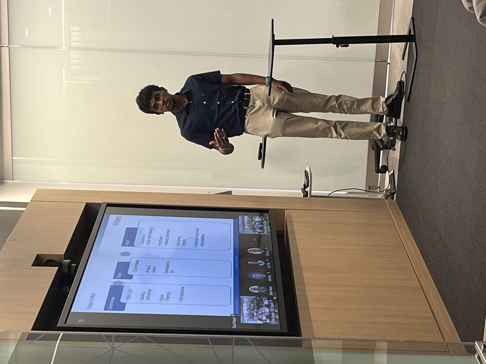
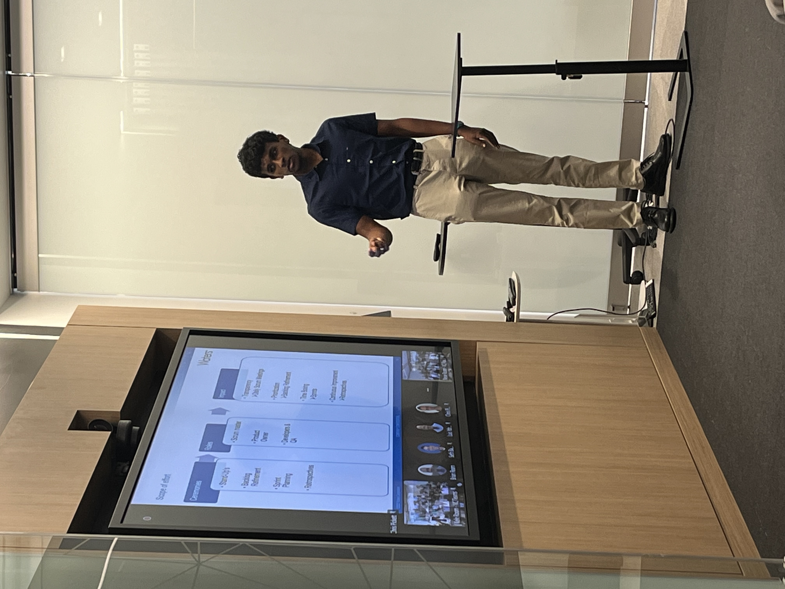
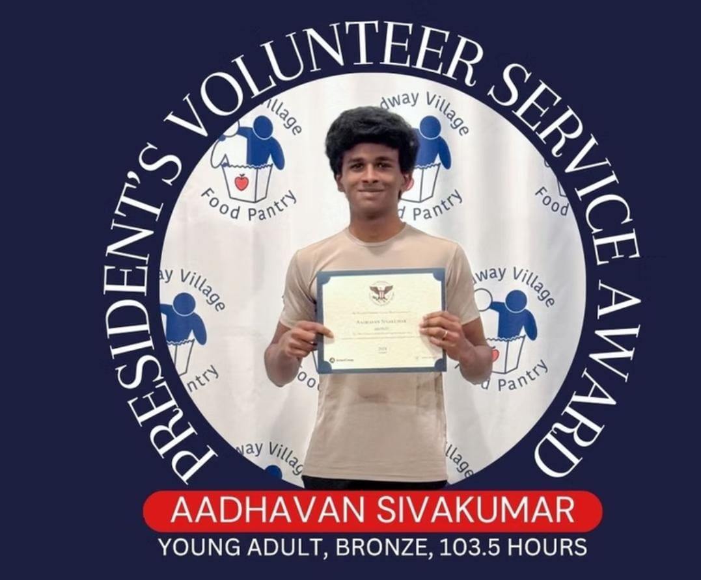
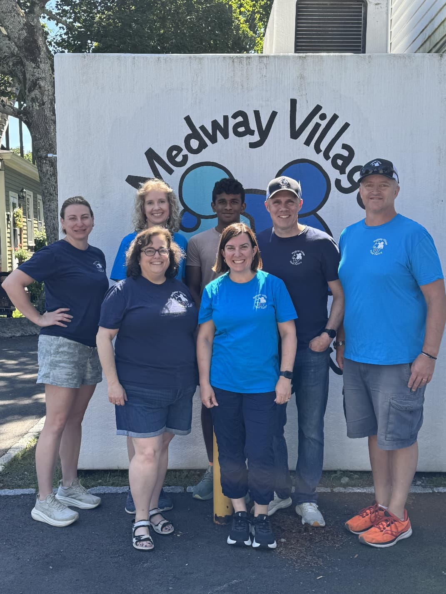
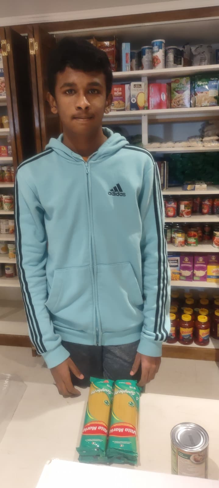
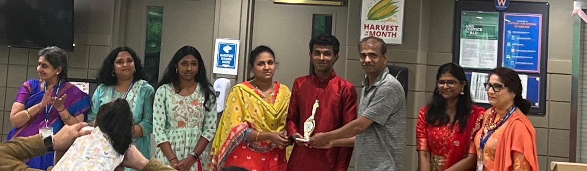

About Me
I am a Computer Science student at Purdue University, pursuing the Machine Intelligence and Security tracks alongside a minor in Statistics. My interest sits where machine learning meets software that people actually rely on — which means caring as much about correctness, data handling, and security as about the model itself.
Outside of coursework I build and ship projects end to end, work with large real-world datasets through The Data Mine on Purdue’s Anvil HPC cluster, and bring industry exposure from a software internship at Waters Corporation. I am currently seeking a Summer 2027 internship in software engineering, AI/ML, or cybersecurity.
What I Bring
Technical Skills
Projects
Stock Trading Simulator with AI Assistant
A full-stack paper-trading application that lets users create accounts and trade stocks with virtual funds. Trades execute inside database transactions, so a position and its cash balance can never drift out of sync, and live market data comes from the Alpaca API. Authentication is handled through Authlib, a pytest suite covers the trading logic, and a shared operations layer backs both the web interface and a command-line client so both paths run the same validated code.
The app also includes an AI “Ask” feature that explains a stock’s historical price movements in plain language. It uses a deliberately security-conscious data flow: the client sends only a ticker symbol, while the server supplies all price, position, and history data — keeping account details off the client entirely. The feature is scoped to factual explanation, instructed to state uncertainty rather than guess, and never gives investment advice.
Note: the live demo is hosted on a free tier, so it may take a moment to load on first visit.
Consumer Complaints Analysis — The Data Mine
An analysis of the Consumer Financial Protection Bureau (CFPB) consumer complaints dataset, carried out on Purdue’s Anvil high-performance computing cluster through The Data Mine. I queried and cleaned a large real-world dataset to identify regional complaint patterns.
Experience
Intern — Waters Corporation
Selected for a summer internship at Waters Corporation, an analytical instruments and software company in Milford, MA, where I studied Agile and Scrum development methodology and how engineering teams measure efficiency.
Summer 2025Scrum Process Research
Researched the company’s Scrum process, then built and delivered a presentation to fellow interns and project managers recommending specific improvements to how the team ran its sprints.
Summer 2025Team Collaboration
Worked alongside professional development teams to see how software is planned, reviewed, and shipped in a corporate environment, and how process decisions affect delivery.
Summer 2025Internship Moments


Education
Purdue University — West Lafayette, IN Expected May 2030
B.S. Computer Science — Machine Intelligence & Security Tracks · Minor in Statistics
Relevant Coursework
Problem Solving and Object-Oriented Programming in Java
Tools — Linux, the command line, Git, and the developer toolchain
Plane Analytic Geometry and Calculus II
The Data Mine — data science methods applied to real-world datasets
The Data Mine — Purdue University 2026 – Present
Member of Purdue’s interdisciplinary data science learning community, working with large real-world datasets on the Anvil high-performance computing cluster.
Earlier Coursework & Recognition
College Board recognition for high achievement across multiple AP examinations
Independent study in data collection and cleaning with Python
Independent study in AI modeling fundamentals and applied machine learning
Personal finance — financial planning, investment strategy, and economic principles
Interests & Goals
I am drawn to the point where machine learning stops being a demo and starts being something people can trust. My two CS tracks reflect that: Machine Intelligence for building systems that learn, and Security for making sure those systems can be defended rather than just demonstrated.
Fintech is where both interests meet in practice. Building a paper-trading platform taught me that the hard parts are rarely the models — they are transactional correctness, keeping sensitive account data on the server, and being honest about what an AI feature does and does not know.
Through my Statistics minor and The Data Mine, I am working toward a Summer 2027 internship where I can ship software that real people depend on, and learn from engineers who have already done it.
Leadership & Service
Captain, Varsity Cross Country
Led the Medway High School varsity cross country team as captain, organizing summer training of 40+ miles per week and mentoring younger athletes through the season.
2025Presidential Volunteer Service Award
Recognized with the President’s Volunteer Service Award for sustained service at the Medway Food Pantry, part of 350+ total volunteer hours across the food pantry and Shishu Bharati.
2022 – 2026Team Leader, Shishu Bharati
Team leader for the Tamil and Refreshments departments at Shishu Bharati, teaching language and culture classes and coordinating volunteers for school-wide events.
2020 – 2026National Honor Society
Inducted member, selected for the combination of academic standing, leadership, and documented community service.
2024 – 2026Service Moments




Get In Touch
Let’s Connect
I am always glad to talk about internship opportunities, projects, or anything at the intersection of software, machine learning, and security.